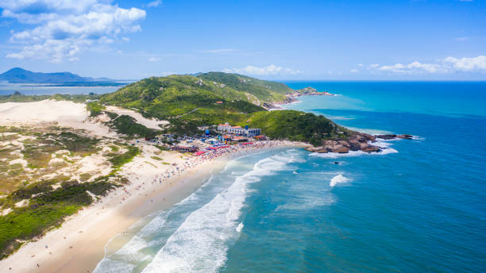
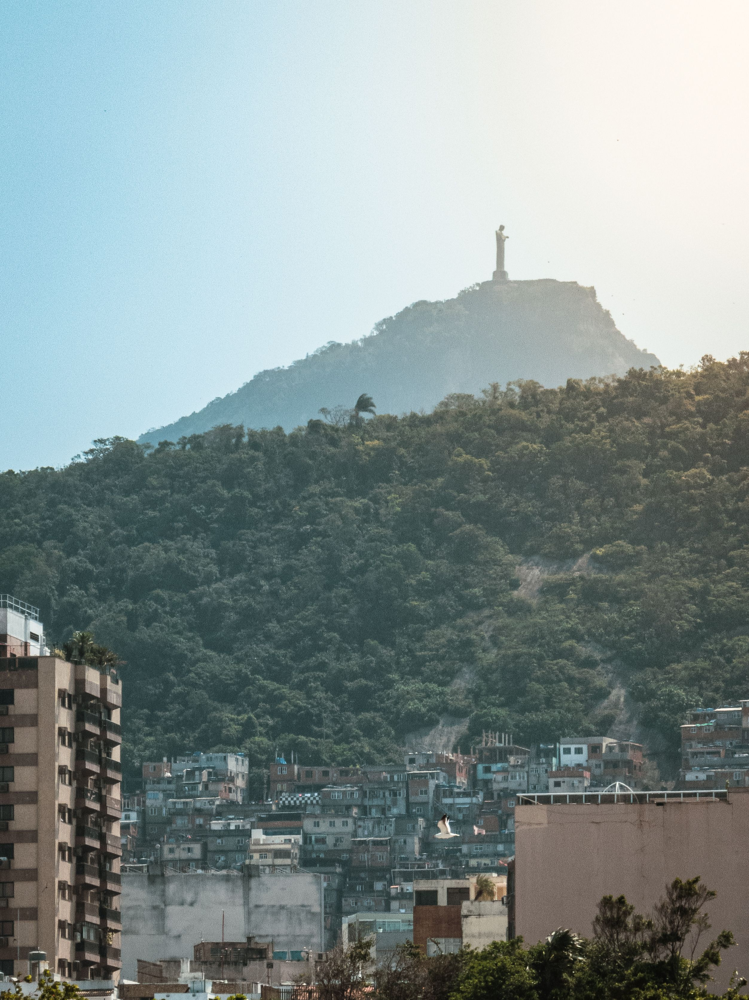
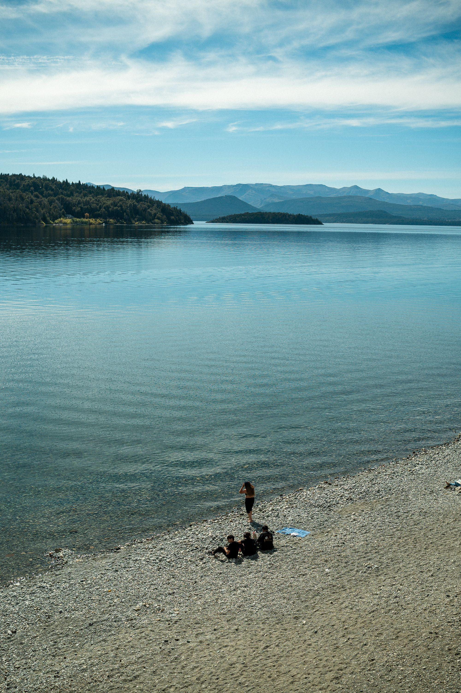

Ubicacion:Se encuentra en la zona este de Florianopolis, Brasil.
Descripcion:Es una de las playas mas conicidas de Florianopolis. Se caracteriza por sus paisajes, sus dunas y sus aguas
Que se puede hacer:se puede disfrutar de la playa, caminar por las dunas, practicar deportes y disfrutar del paisaje.
¿Por que visitarla?Es un lugar recomendado para disfrutar de la naturaleza y conocer uno de los atractivos mas importantes de Florianopolis.

Ubicacion:Se encuentra en la ciudad de Rio de Janeiro, Brasil, sobre el cerro del Corcovado.
Descripcion:Es un monumento reeconocido mundialmete y uno de los principales atractivos turisticos de Rio de Janeiro.
Que se puede hacer:Se puede visitar el monumento, observar las vistas panoramicas y sacar fotografias de la ciudad.
¿Por que visitarlo?Es recomendable por su importancia cultural y por las increibles visitas de Rio de Janeiro.

Ubicacion:Se encuentra en la Patagonia Argentina, principalmente en la provincia de Rio Negro y Neuquen.
Descripcion:Es un hermoso lago rodeado de montañas y paisajes naturales. Forma parte del Parque Nacional Nahuel Huapi.
Que se puede hacer:Se pueden realizar excursiones, caminatas, paseos en barco y disfrutar de la naturaleza.
¿Por que visitarlo?Es recomendable x sus paisajes naturales y por ser uno de los lugares mas destacados de la Patagonia argentina.